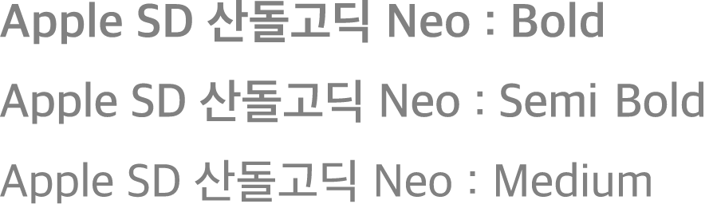

100% eco Fresh Milk의 패키지 디자인 프로젝트를 진행하였습니다
Fresh, Natural, Delicious와 같은 USP(Unique sales Point)를 디자인 에센스로 활용하여
이미지, 컬러, 타입 페이스 그리고 그래픽 요소를 정비하였으며,
Fresh Milk가 매장에서 디스플레이될때 브랜드와 제품정보가 효과적으로
전달될 수 있도록 이를 고려한 레이아웃을 연출하는데 주안점을 두었습니다.

제목과 본문 글꼴을 모두 Apple SD 산돌고딕 Neo 를 사용하여 제품의 통일감을 주고
고딕계열의 폰트를 사용해 가독성을 챙김과
동시에 제품에 대한 신뢰감을 나타냈습니다.
신뢰감과 신선함을 나타내는 Blue 컬러를 채택하여 신선함이
특히 강조되어야 하는 제품의 특성을 표현해 소비자들에게
신뢰감을 주도록 디자인했습니다.